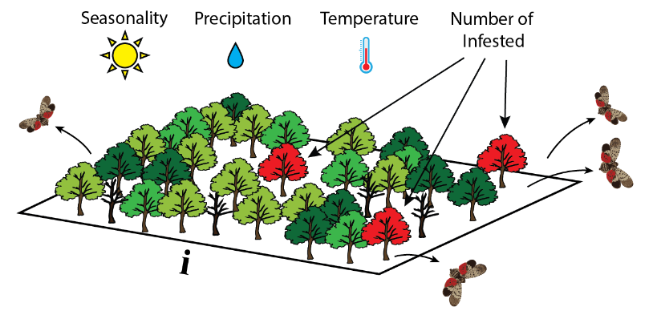

Pest or Pathogen Spread Modeling
Anna Petrasova, Vaclav Petras, Devon Gaydos, Chris Jones,
Helena Mitasova
Motivation
- Plant diseases and pests threaten production of food and plant-based materials.
- NCSU CGA & USDA APHIS investigating the spread of pests and pathogens.

Modeling components
When performing simulations we need to consider
modeling components:
- Modeled quantity [units]: density of infected plants (hosts) - $n_i/m_2$
- Spatial and temporal scale: from field at 1m res and days to global spread
- Configuration space and interactions: host density, weather, infected locations
- Governing equations or rules: rate of reproduction, distance and direction of spread,
establishment and die out
Pest or Pathogen Spread Model PoPS
Geospatial simulation of pests and pathogens (dispersers) over a landscape
Main drivers:
- host density
- weather conditions
- locations with infected hosts
Main output: Spatial distribution of infected host densities at a given time
PoPS model description
Governing equation
Describes density of infected hosts at time $t$
as a function of dispersers reproduction, dispersal and establishment
$$ \Psi_{ijt} = \beta W_{it} I_{it} * K (d, w) * (W_{jt} S_{jt}) / N_j
where
- $\Psi_{ijt}$ is number of infested hosts in cell $j$ as a result of pest dispersal from cell $i$
- $\beta$ number of dispersers from a single host under optimal conditions
- $W_{it}$ is weather in cell i, $I_{it}$ number of infected plants in cell $i$
- $W_{jt}$ is weather in cell j, $S_{jt}$ number of suspected hosts in cell $j$,
- $N_j$ number of all potential hosts

Generating dispersers
Number of dispersers each infected host produces:
$$ S \sim Pois(\lambda), \lambda = r w_i = \beta X_{it} P_{it} T_{it} I_{it}$$
$r$ is reproductive rate, $w_i$ is weather condition in cell $i$
$X_{it} P_{it} T_{it}$ is weather: seasonality, precipitation, temperature

Spreading the dispersers
to a distance $D$ in the direction $\theta$ sampled from:
$$D∼Cauchy(0,\gamma) \quad \theta∼vonMises(\mu,\kappa)$$
with distance scale $\gamma$,
mean angle $\mu$ and
strength of direction $\kappa$,
von Mises is circular normal distribution

Establishment of dispersers
The probability $P$ that a spore infects a susceptible host
in a cell $j$
$$P_j = w_j * S_j/N_j $$
where $S$ is the number of susceptible hosts and $N$ is the number of all hosts

Scenario modeling
PoPS allows spatial management input at specific times of the simulation
Software
All open source, hosted on GitHub


User Interfaces
- PoPS Web Platform
- Tangible Landscape

PoPS Forecasting and Control System
Interconnected components:
- PoPS model: predicts probability of infection
- Spatial Decision Support System: interactive dashboard for stakeholders
- Iterative sampling and management: validation of forecasts and improving calibration
- Pest/Pathogen parameter library: biological characteristics influencing spread
- Host map library: satellite data + machine learning algorithms
Calibration and validation
- What are the correct parameters for this model?
- Calibration is the estimation and adjustment of model parameters
and constraints to improve the agreement between model output and a data set
- How does the model perform compared to the real system?
- Validation is a demonstration that a model possesses a satisfactory range of accuracy consistent with intended application of the model
Comparison metrics
- Proportion of correct pixels
- Odds ratio
- Kappa
- Quantity disagreement
- Allocation disagreement
- Configuration disagreement
Quantity and Allocation disagreement

Quantity disagreement = $|3 - 4| = 1$
Allocation disagreement = 2 (always even, here 1 pixel swapped)
Confusion matrix

Odds Ratio
$$\mbox{Odds ratio} = \frac{TP * TN}{FP * FN}$$
Issues with Odds Ratio
1) Over-reliance on negative values and
2) different odds ratios with the same disagreement:

|
A |
B |
| Quantity disagreement |
$|6-5| = 1$ |
$|6-7| = 1$ |
| Allocation disagreement |
$2$ |
$2$ |
| Odds Ratio |
$(4 * 2) / (2 * 1) = 4$ |
$(5 * 1) / (1 * 2) = 2.5$ |
Kappa
If the rasters are in complete agreement then $\kappa = 1$.
If there is no agreement other than what would
be expected by chance $\kappa = 0$.
$$\kappa = \frac{P_o - P_e}{1 - P_e}$$
$$P_o = \mbox{observed agreement} = \frac{TP + TN}{\mbox{All}}$$
$$P_e = \mbox{probability of random agreement} = P_{yes} + P_{no}$$
$$P_{yes} = \frac{TP + FN}{\mbox{All}} * \frac{TP + FP}{\mbox{All}}$$
$$P_{no} = \frac{FP + TN}{\mbox{All}} * \frac{FN + TN}{\mbox{All}}$$
Issues with Kappa
- Penalizes a map more strongly for allocation disagreement than quantity disagreement
- It’s a ratio, which can introduce problems in calculation and interpretation
(e.g., when denominator or numerator is 0;
is a value low because the denominator is high,
or because the numerator is low?
- It compares to a random baseline, but this can be irrelevant
or misleading. It might be more useful to compare to a naïve classification (like assuming no disease spread)
See Death to Kappa, Pontius et al 2011
Landscape pattern
Simulations A and B have the same
quantity and allocation disagreements,
but A is more reflective of the truth.
Configuration disagreement
Combination of different metrics:
- Edge contrast
- Patch shape complexity
- Aggregation
- Nearest neighbor distance
- Patch dispersion
- Large patch dominance
- Neighborhood similarity
See Pickard et al. (2019),
Cushman et al. (2008)
Calibration methods
- Monte Carlo Markov Chains (MCMC)
- Approximate Bayesian Computation (ABC)
Assumptions:
- Simulation and data are comparable (i.e., the output from the simulation is
something that is recorded in the data)
or can be compared from summary statistics.
Calibration using MCMC
- Markov Chains:
- sequences of events that are probabilistically related to each other.
Each event comes from a set of outcomes, and each outcome determines
which outcome occurs next, according to some fixed probability set.
- They are memoryless: everything you need to know for the next state
is available in the current state.
- Over the long run, it settles into a pattern.
- Monte Carlo simulations
- repeatedly generating random numbers to estimate some fixed parameter value
Calibration using MCMC
- generate a random parameter set and run the model
- if the new parameter performs better, it is added to the chain of parameter values with a certain probability determined by how much better it is
- repeat this sequence many times to get a distribution of possible parameters
- take the most common parameter from this distribution
Calibration using ABC
- Generations
- number of times to iterate
- Particles
- number of parameter sets to keep in each generation
- Epsilon
- the threshold that determines if a parameter set is kept or rejected
Calibration using ABC
- Choose number of Particles (P)
- Choose epsilon $\epsilon$
- Calculate summary statistics for observed data $S_d$
- Draw parameters from a uniform distribution
- Run model
- Calculate summary statistics for simulated data $S_s$
- $D(S_d, S_s) ≦ \epsilon$
- Keep (increase p by 1)
- Else reject
- Repeat 4 - 7 until p = P
Basic ABC example
$S_d = 7$, $\epsilon=5$, $P=3$
| $S_s$ |
$D(S_d,S_s)$ |
Kept |
| 5 |
2 |
✓ |
| 13 |
6 |
✕ |
| 17 |
10 |
✕ |
| 7 |
0 |
✓ |
| 8 |
1 |
✓ |
Simple, but requires lot of user input to test for best $\epsilon$,
computationally slow if $\epsilon$ is low.
Calibration using ABC-SMC
ABC with sequential Monte Carlo sampling:
- a sequence of distributions is constructed by gradually
decreasing $\epsilon$ in each generation
($\epsilon_1, \epsilon_2, \epsilon_3,$...
can be pre-selected or derived based on the previous generation)
- each generation is obtained as a weighted sample from the previous distribution
that has been perturbed through a kernel
- perturbation kernel can be uniform distribution,
multivariate normal distribution
Calibration using ABC-SMC MNN
Adaptive routines to find optimal perturbation kernel:
- ABC-SMC MNN uses multivariate normal distribution
based on covariance matrix
- covariance matrix calculated using M nearest neighbors (MNN) of
a particle
- normalised Euclidean distance can be used when searching
for the nearest neighbours
Bayesian Updating
Quickly incorporate new data:
- use previous posterior means and covariance matrix as priors for next time
- use ABC_SMC MNN to calibrate for new year of data
- calculate weights, e.g., based on number of observations
- calculate posteriors from priors, calibrated parameters and weights